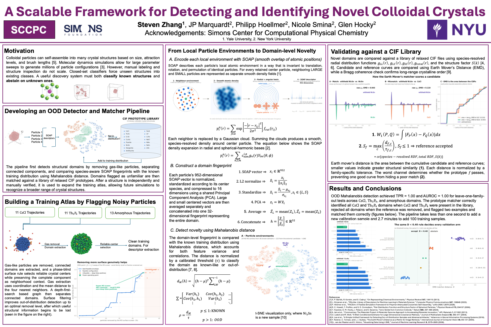

Detecting and identifying colloidal crystals.
I built a pipeline for analyzing molecular-dynamics simulations of colloidal self-assembly. It separates structural domains, identifies known crystal prototypes, and flags unfamiliar structures for further investigation.
Time-compressed playback of sampled simulation frames. Colors distinguish the P and N particle types. Use the video controls to pause or replay.
